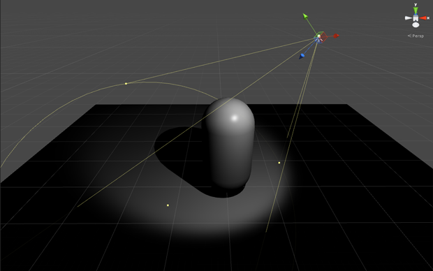

This week, I have read three articles all focusing on the medium itself. From different perspectives, they remind us that technology is neither transparent nor neutral, but has been slowly shaping our world and the way we think all the time.
LMM Engineering. (n.d.). Connected Infrastructure [Online image]. Available at: https://lmmengineering.com/blog/f/connected-infrastructure (Accessed: 11 February 2025)
Galloway states quite directly in the chapter “Physical Media” that digital content doesn’t actually “float in the cloud”. Instead, it requires real physical devices for support. This makes me think that many people believe technologies like VR and cloud computing seem to be “virtual”. However, in fact, every time when someone take a stroll in a VR environment, there is a bunch of computers, servers, and cables working ceaselessly behind the scenes. Just like when we order a cup of bubble tea for delivery, there are actually delivery riders, electric bicycles, and an order system operating in the background. Galloway has made me realize that as students of creative computing, we don’t just design the “interface”. We should also understand the physical world behind the interface.

Unity Technologies. (n.d.). Introduction to Lighting and Rendering [Online image]. Available at: https://learn.unity.com/tutorial/introduction-to-lighting-and-rendering(Accessed: 11 February 2025)
Flusser’s The Apparatus is also very interesting. He says that our current creative work is becoming more and more reliant on “apparatuses”, but the apparatuses themselves will limit what we can create and how we perceive the world. For example, when I’m building a 3D scene using Unity, I will be restricted by its coordinate system and lighting system. Or when I’m taking photos with my mobile phone, it will have built-in beauty filters or presets, and these things are no longer “decided by me”, but rather “decided on my behalf” by the device. This makes me realize that when we are creating something, we are actually “having a conversation” with the apparatus, and sometimes even “compromising” with it.
Creative Thinks Media. (n.d.).[Online image]. Available at: https://creativethinksmedia.com/tips-how-to-choose-right-advertising-media-for-a-constant-growth/(Accessed: 11 February 2025)
McLuhan’s famous statement “The Medium is the Message” is more like a reminder. He said that instead of just focusing on what content we convey, we should pay more attention to the way we convey it. For example, broadcasting the news on television is completely different in terms of communication logic from posting a short video on TikTok. Even if the content is the same, the medium will determine the way it has an impact. I really like this perspective because it makes me start to think: “What medium should I choose to express my work? What kind of message does this medium itself bring?”
Overall, these three articles function as a deconstruction of the key concepts of creative computing from three perspectives: underlying physics, device logic, and media culture. It makes me realize that we are not just “creating content”, but rather “telling stories with technology, and the technology itself is a part of the story.”
Reading list
- Galloway, Chapter 5: Physical Media
- Flusser, Chapter 5: The Apparatus
- McLuhan: The Medium is the Message（Selected from Understanding Media: The Extensions of Man, 1964）